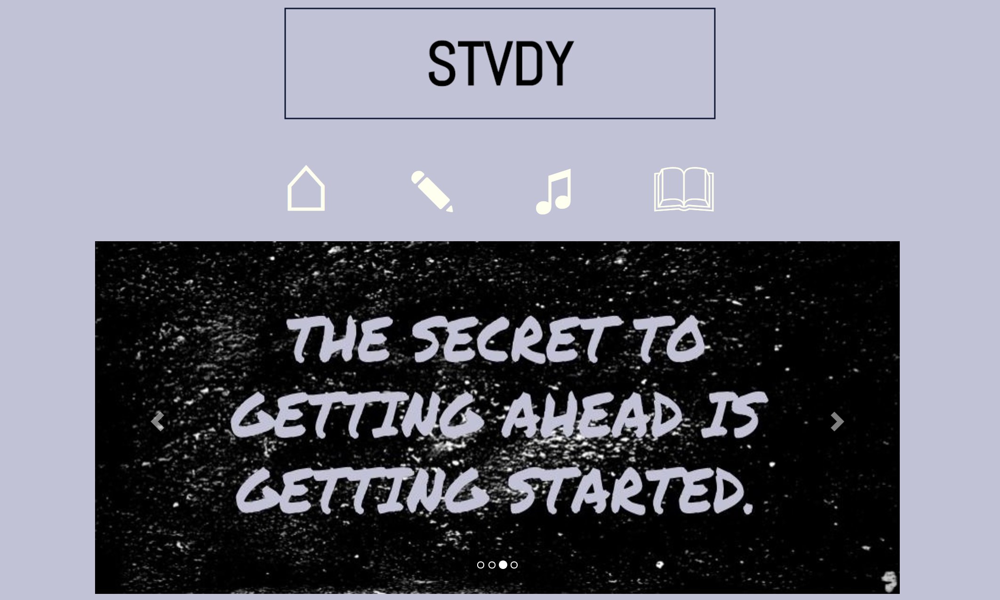
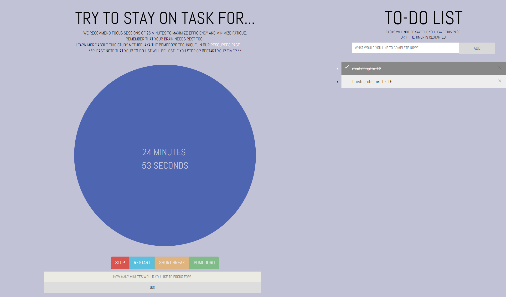
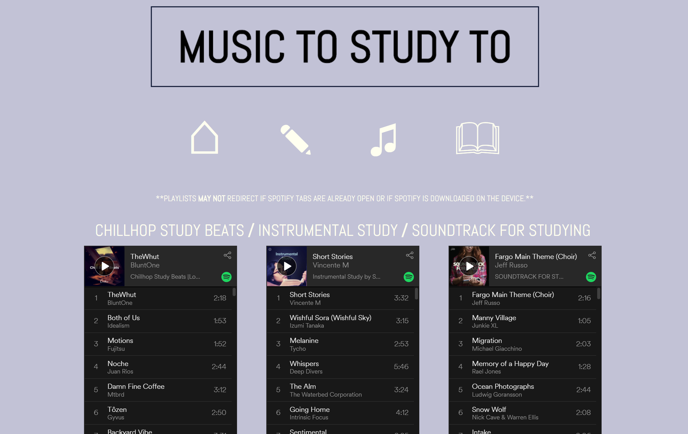
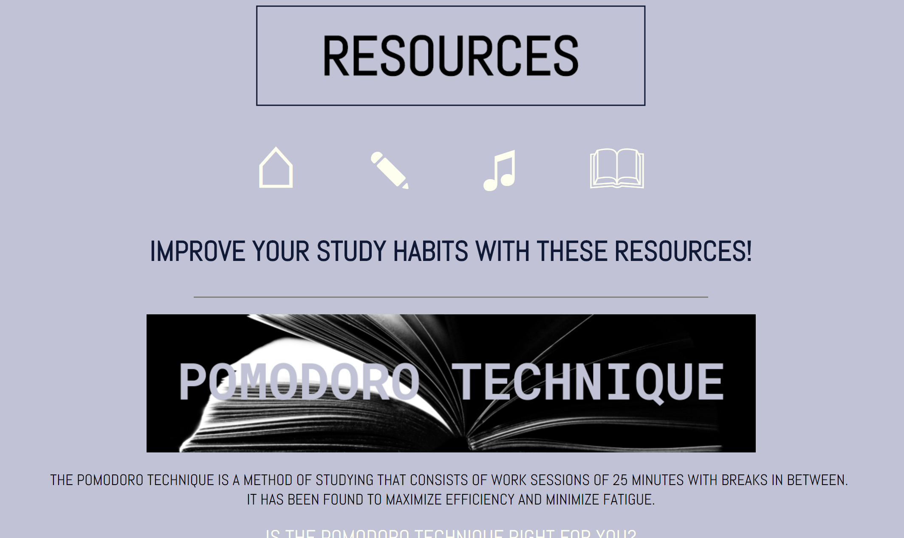

many students and professoinals find themselves distracted while working - that's why I, along with three other girls, created STVDY.
check it out!





many students and professoinals find themselves distracted while working - that's why I, along with three other girls, created STVDY.